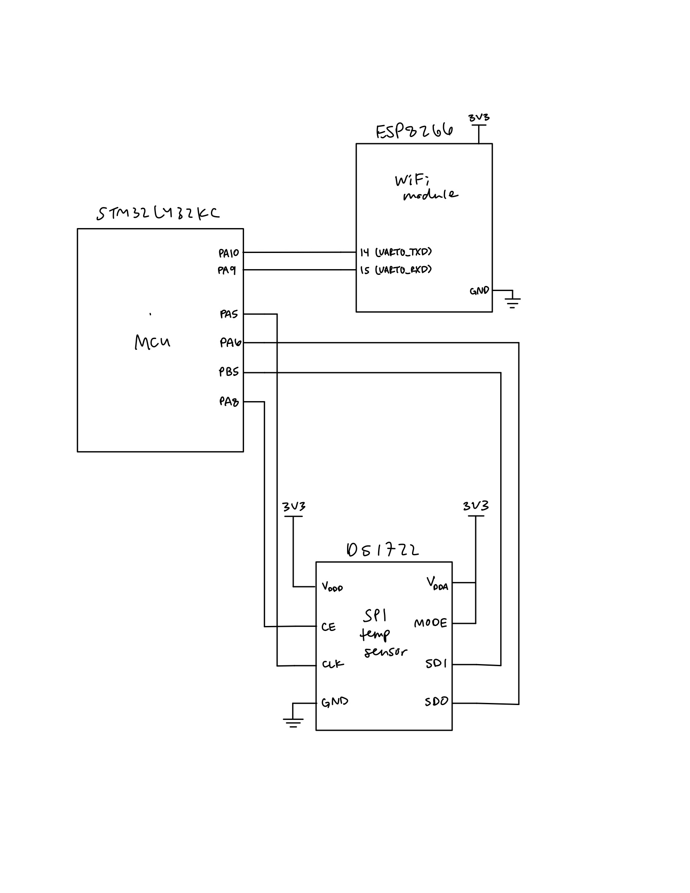
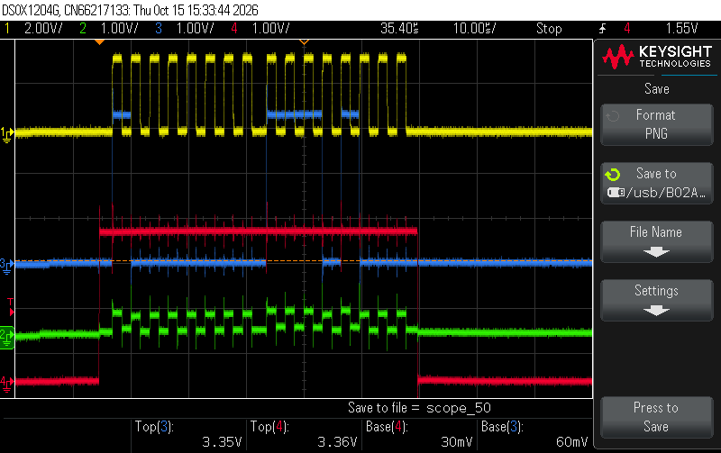
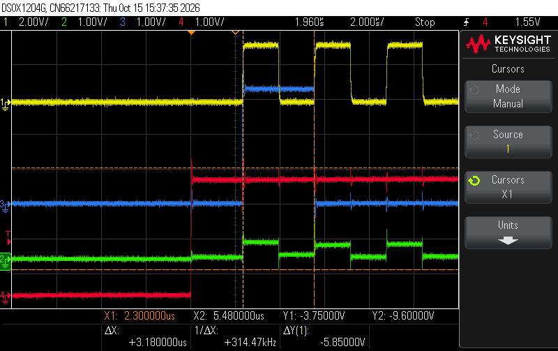
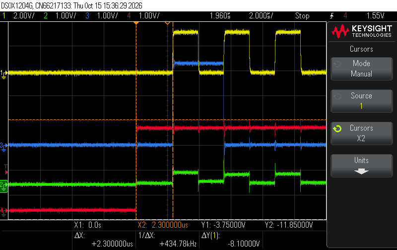
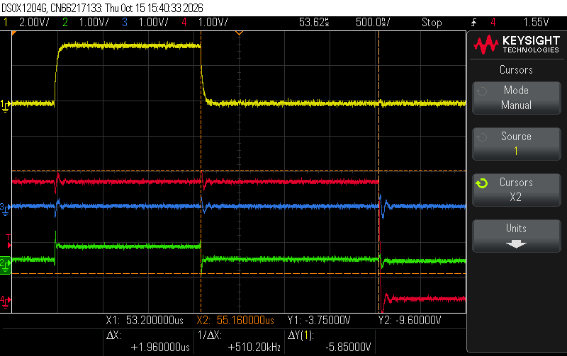
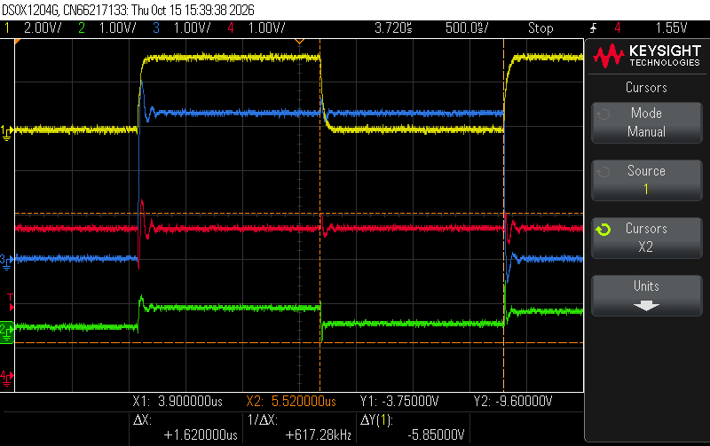

Lab 6: The Internet of Things and SPI
1 Introduction
In this lab, I built an IoT device using the STM32L432KC MCU, a DS1722 digital temperature sensor, and an ESP8266 Wi-Fi module. I wrote an SPI driver using the CMSIS device templates and a DS1722 driver on top of it. The MCU reads the temperature over SPI and serves a webpage (through the ESP8266 over UART) that shows the current temperature, lets the user pick the sensor resolution (8 to 12 bits), and shows and toggles the on-board LED.
1.1 Overall Design
main.c: receives requests from the ESP8266 over USART1, updates LED and resolution, reads the temperature, and sends back the webpageSTM32L432KC_SPI.c/.h: SPI1 master driverDS1722.c/.h: DS1722 driver
1.2 SPI Driver
SPI1 is configured as master, 8-bit data, MSB first, full duplex, with software slave management. CE is driven manually on PA8 as a GPIO since the DS1722’s CE is active high.
- Baud rate:
BR = 0b111(fPCLK/256 = 80 MHz / 256 ≈ 312.5 kHz) - CPOL = 0, CPHA = 1 (the DS1722 latches data on the falling edge in this mode)
spiSendReceive() waits for TXE, writes one byte to DR, waits for RXNE, reads the received byte, then waits for BSY to clear so CE isn’t dropped mid-transfer.
1.3 DS1722 Driver
The temperature is read in one transaction: address 0x01, then two dummy bytes to clock out the LSB and MSB. The two bytes form a 16-bit two’s complement value with 8 fractional bits, so the temperature in °C is the signed value divided by 256.
After a resolution change, the driver waits the max conversion time for that resolution (75 / 150 / 300 / 600 / 1200 ms for 8–12 bits) before reading.
1.4 Webpage
1.5 Testing
2 Technical Documentation
2.1 Code
STM32L432KC_SPI.h)
// STM32L432KC_SPI.h
// TODO: <YOUR NAME>
// TODO: <YOUR EMAIL>
// TODO: <DATE>
// TODO: <SHORT DESCRIPTION OF WHAT THIS FILE DOES>
#ifndef STM32L4_SPI_H
#define STM32L4_SPI_H
#include <stdint.h>
#include <stm32l432xx.h>
///////////////////////////////////////////////////////////////////////////////
// Function prototypes
///////////////////////////////////////////////////////////////////////////////
/* Enables the SPI peripheral and intializes its clock speed (baud rate), polarity, and phase.
* -- br: (0b000 - 0b111). The SPI clk will be the master clock / 2^(BR+1).
* -- cpol: clock polarity (0: inactive state is logical 0, 1: inactive state is logical 1).
* -- cpha: clock phase (0: data captured on leading edge of clk and changed on next edge,
* 1: data changed on leading edge of clk and captured on next edge)
* Refer to the datasheet for more low-level details. */
void initSPI(int br, int cpol, int cpha);
/* Transmits a character (1 byte) over SPI and returns the received character.
* -- send: the character to send over SPI
* -- return: the character received over SPI */
char spiSendReceive(char send);
#endifSTM32L432KC_SPI.c)
// STM32L432KC_SPI.c
// SPI1 master driver for STM32L432KC (matches the course-provided STM32L432KC_SPI.h)
#include "STM32L432KC_SPI.h"
void initSPI(int br, int cpol, int cpha) {
// Make sure the SPI1 peripheral clock is on (APB2ENR.SPI1EN)
RCC->APB2ENR |= RCC_APB2ENR_SPI1EN;
// Disable SPI and start from a clean slate so re-init is safe
SPI1->CR1 = 0;
SPI1->CR2 = 0;
// CR2: 8-bit data size, RXNE fires at 8 bits, Motorola frame format (FRF=0),
// no hardware NSS output (SSOE=0), no NSS pulse (NSSP=0)
SPI1->CR2 = _VAL2FLD(SPI_CR2_DS, 0b0111) | SPI_CR2_FRXTH;
// CR1: baud rate, polarity, phase
SPI1->CR1 |= _VAL2FLD(SPI_CR1_BR, br & 0x7);
SPI1->CR1 |= _VAL2FLD(SPI_CR1_CPOL, cpol & 1);
SPI1->CR1 |= _VAL2FLD(SPI_CR1_CPHA, cpha & 1);
// MSB first, full duplex, 2-line (LSBFIRST, RXONLY, BIDIMODE already 0 from reset above)
// Software slave management: internal NSS held high so master mode isn't faulted
SPI1->CR1 |= SPI_CR1_SSM | SPI_CR1_SSI;
// Master mode (after SSI is set)
SPI1->CR1 |= SPI_CR1_MSTR;
// Enable last
SPI1->CR1 |= SPI_CR1_SPE;
}
char spiSendReceive(char send) {
while (!(SPI1->SR & SPI_SR_TXE)); // wait until TX buffer empty
*(volatile uint8_t *)&SPI1->DR = (uint8_t)send; // 8-bit write: one byte into the FIFO
while (!(SPI1->SR & SPI_SR_RXNE)); // wait for received byte
uint8_t rx = *(volatile uint8_t *)&SPI1->DR; // 8-bit read
while (SPI1->SR & SPI_SR_BSY); // bus idle before caller drops CE
return (char)rx;
}DS1722.h)
// DS1722.h
// DS1722 digital thermometer driver (SPI mode, CE active high on PA8)
#ifndef DS1722_H
#define DS1722_H
#include <stdint.h>
#include "STM32L432KC.h"
#define DS1722_CE_PIN PA8
// Config bytes: 111 1SHOT R2 R1 R0 SD, with SD=0 (continuous), 1SHOT=0
#define DS1722_CFG_8BIT 0xE0
#define DS1722_CFG_9BIT 0xE2
#define DS1722_CFG_10BIT 0xE4
#define DS1722_CFG_11BIT 0xE6
#define DS1722_CFG_12BIT 0xE8
// Sets continuous conversion at 12-bit and waits for the first conversion.
void initTempSensor(void);
// Writes a config byte (0xE0..0xE8) and waits one full conversion time.
// Ignores bytes that aren't a valid resolution config (e.g. 0).
void writeToTempSensor(uint8_t cfg);
// Reads the config register (for checking the SPI link; expect what you wrote).
uint8_t readConfigFromTempSensor(void);
// Reads temperature registers and returns degrees C.
double readFromTempSensor(void);
// Converts raw {MSB, LSB} to degrees C (16-bit two's complement, /256).
double calc_temp(uint8_t hi, uint8_t lo);
#endifDS1722.c)
// DS1722.c
// DS1722 digital thermometer driver over SPI (CE active high on PA8)
#include "DS1722.h"
#define DS1722_ADDR_CFG_READ 0x00
#define DS1722_ADDR_CFG_WRITE 0x80
#define DS1722_ADDR_TEMP_LSB 0x01 // MSB at 0x02; burst read auto-advances 01h -> 02h
static void ceHigh(void) { digitalWrite(DS1722_CE_PIN, 1); }
static void ceLow(void) { digitalWrite(DS1722_CE_PIN, 0); }
// Max conversion time in ms for a given config byte (datasheet Table 5)
static uint32_t conversionMs(uint8_t cfg) {
if (cfg & 0x08) return 1200; // R2=1 -> 12-bit
switch ((cfg >> 1) & 0x3) { // R1:R0
case 0: return 75; // 8-bit
case 1: return 150; // 9-bit
case 2: return 300; // 10-bit
default: return 600; // 11-bit
}
}
static void writeConfig(uint8_t cfg) {
ceHigh();
spiSendReceive(DS1722_ADDR_CFG_WRITE);
spiSendReceive(cfg);
ceLow();
}
void initTempSensor(void) {
ceLow();
writeConfig(DS1722_CFG_12BIT); // powers up in shutdown; this clears SD
delay_millis(TIM15, 1200); // let the first 12-bit conversion finish
}
void writeToTempSensor(uint8_t cfg) {
// Accept only 111x xxx0 patterns with 1SHOT clear: 0xE0, E2, E4, E6, E8
if ((cfg & 0xF1) != 0xE0 || ((cfg >> 1) & 0x7) > 4) return;
writeConfig(cfg);
delay_millis(TIM15, conversionMs(cfg)); // CE is already low while we wait
}
uint8_t readConfigFromTempSensor(void) {
ceHigh();
spiSendReceive(DS1722_ADDR_CFG_READ);
uint8_t cfg = spiSendReceive(0x00);
ceLow();
return cfg;
}
double readFromTempSensor(void) {
// One burst transaction: address 0x01, then LSB, then MSB (address auto-increments)
ceHigh();
spiSendReceive(DS1722_ADDR_TEMP_LSB);
uint8_t lsb = spiSendReceive(0x00);
uint8_t msb = spiSendReceive(0x00);
ceLow();
return calc_temp(msb, lsb);
}
double calc_temp(uint8_t hi, uint8_t lo) {
// {hi, lo} is a 16-bit two's complement value with 8 fractional bits.
// The signed cast handles negative temperatures.
int16_t raw = (int16_t)(((uint16_t)hi << 8) | lo);
return raw / 256.0;
}main.h)
/**
Main Header: Contains general defines and selected portions of CMSIS files
@file main.h
@author Josh Brake
@version 1.0 10/7/2020
*/
#ifndef MAIN_H
#define MAIN_H
#include "STM32L432KC.h"
#define LED_PIN PB3 // LED pin for blinking on Port B pin 3
#define BUFF_LEN 32
#endif // MAIN_Hmain.c)
/*
File: Lab_6_JHB.c
Author: Josh Brake
Email: jbrake@hmc.edu
Date: 9/14/19
*/
#include <string.h>
#include <stdlib.h>
#include <stdio.h>
#include "main.h"
/////////////////////////////////////////////////////////////////
// Web page pieces
/////////////////////////////////////////////////////////////////
char* webpageStart = "<!DOCTYPE html><html><head><title>DS1722 Temperature Sensor</title>\
<meta name=\"viewport\" content=\"width=device-width, initial-scale=1.0\">\
</head>\
<body><h1>DS1722 Temperature Sensor</h1>";
char* resStr = "<h2>Resolution Control:</h2>\
<form action=\"12bit\"><input type=\"submit\" value=\"12 bits\"></form>\
<form action=\"11bit\"><input type=\"submit\" value=\"11 bits\"></form>\
<form action=\"10bit\"><input type=\"submit\" value=\"10 bits\"></form>\
<form action=\"9bit\"><input type=\"submit\" value=\"9 bits\"></form>\
<form action=\"8bit\"><input type=\"submit\" value=\"8 bits\"></form>";
char* ledStr = "<h2>LED Control:</h2><form action=\"ledon\"><input type=\"submit\" value=\"Turn the LED on!\"></form>\
<form action=\"ledoff\"><input type=\"submit\" value=\"Turn the LED off!\"></form>";
char* webpageEnd = "</body></html>";
/////////////////////////////////////////////////////////////////
// Helpers
/////////////////////////////////////////////////////////////////
// Returns 1 if des appears in request, -1 if not
int inString(char request[], char des[]) {
if (strstr(request, des) != NULL) {return 1;}
return -1;
}
// LED state persists between requests; only ledon/ledoff change it
int updateLEDStatus(char request[])
{
static int led_status = 0;
if (inString(request, "ledoff") == 1) {
digitalWrite(LED_PIN, PIO_LOW);
led_status = 0;
}
else if (inString(request, "ledon") == 1) {
digitalWrite(LED_PIN, PIO_HIGH);
led_status = 1;
}
return led_status;
}
// Returns the DS1722 config byte for a resolution button, or 0 if the request isn't one
uint8_t updateResStatus(char request[])
{
if (inString(request, "12bit") == 1) return DS1722_CFG_12BIT;
if (inString(request, "11bit") == 1) return DS1722_CFG_11BIT;
if (inString(request, "10bit") == 1) return DS1722_CFG_10BIT;
if (inString(request, "9bit") == 1) return DS1722_CFG_9BIT;
if (inString(request, "8bit") == 1) return DS1722_CFG_8BIT;
return 0;
}
// Number of resolution bits for a config byte (R2 -> 12, else 8 + R1:R0)
int resBitsFromCfg(uint8_t cfg)
{
if (cfg & 0x08) return 12;
return 8 + ((cfg >> 1) & 0x3);
}
// Writes value / 10^decimals as text (e.g. 235625 with decimals=4 -> "23.5625") at p.
// Handles negatives and zero-padded fractions without using printf. Returns pointer past the end.
char* fmtFixed(char *p, int value, int decimals)
{
int scale = 1;
for (int i = 0; i < decimals; i++) scale *= 10;
if (value < 0) { *p++ = '-'; value = -value; }
int whole = value / scale;
int frac = value % scale;
char tmp[12];
int n = 0;
if (whole == 0) tmp[n++] = '0';
while (whole > 0) { tmp[n++] = '0' + (whole % 10); whole /= 10; }
while (n > 0) *p++ = tmp[--n];
if (decimals > 0) {
*p++ = '.';
int div = scale / 10;
for (int i = 0; i < decimals; i++) { *p++ = '0' + (frac / div) % 10; div /= 10; }
}
*p = '\0';
return p;
}
void configurePins(void)
{
pinMode(PA5, GPIO_ALT); // SPI1_SCK
pinMode(PA6, GPIO_ALT); // SPI1_MISO
pinMode(PB5, GPIO_ALT); // SPI1_MOSI
pinMode(DS1722_CE_PIN, GPIO_OUTPUT); // DS1722 CE (active high)
digitalWrite(DS1722_CE_PIN, 0); // idle low
// Very high output speed for SCK, MISO, MOSI (2 bits per pin: PA5 -> [11:10], PA6 -> [13:12], PB5 -> [11:10])
GPIOA->OSPEEDR |= ((3 << 10) | (3 << 12));
GPIOB->OSPEEDR |= (3 << 10);
// AF5 = SPI1 on PA5 ([23:20]), PA6 ([27:24]) and PB5 ([23:20]) (AFRL, 4 bits per pin)
GPIOA->AFR[0] &= ~((0xFU << 20) | (0xFU << 24));
GPIOB->AFR[0] &= ~(0xFU << 20);
GPIOA->AFR[0] |= ((5U << 20) | (5U << 24));
GPIOB->AFR[0] |= (5U << 20);
}
/////////////////////////////////////////////////////////////////
// Main
/////////////////////////////////////////////////////////////////
int main(void) {
configureFlash();
configureClock();
gpioEnable(GPIO_PORT_A);
gpioEnable(GPIO_PORT_B);
gpioEnable(GPIO_PORT_C);
pinMode(LED_PIN, GPIO_OUTPUT);
RCC->APB2ENR |= (RCC_APB2ENR_TIM15EN);
initTIM(TIM15);
USART_TypeDef * USART = initUSART(USART1_ID, 125000);
// SPI: pins first, then the peripheral (initSPI also enables the SPI1 clock)
configurePins();
initSPI(0b111, 0, 1); // slowest clock (PCLK/256), CPOL=0, CPHA=1 as the DS1722 requires
initTempSensor(); // 12-bit continuous; waits for the first conversion
int resBits = 12;
while(1) {
/* Wait for ESP8266 to send a request.
Requests take the form of '/REQ:<tag>\n', with TAG begin <= 10 characters.
*/
// Receive web request from the ESP
char request[BUFF_LEN] = " "; // initialize to known value
int charIndex = 0;
// Keep going until you get end of line character
while(inString(request, "\n") == -1) {
// Wait for a complete request to be transmitted before processing
while(!(USART->ISR & USART_ISR_RXNE));
char c = readChar(USART);
if (charIndex < BUFF_LEN - 1) request[charIndex++] = c; // don't overflow the buffer
}
// Change resolution only if a resolution button was pressed
uint8_t cfg = updateResStatus(request);
if (cfg) {
writeToTempSensor(cfg); // waits one full conversion at the new resolution
resBits = resBitsFromCfg(cfg);
}
// Read temperature and format it without needing printf float support
double temp = readFromTempSensor();
int tenThousandths = (int)(temp * 10000.0 + (temp >= 0 ? 0.5 : -0.5));
double tempF = temp * 9.0 / 5.0 + 32.0;
int hundredthsF = (int)(tempF * 100.0 + (tempF >= 0 ? 0.5 : -0.5));
char tempStatusStr[96];
char *p = tempStatusStr;
strcpy(p, "Temperature: "); p += strlen(p);
p = fmtFixed(p, tenThousandths, 4);
strcpy(p, " C / "); p += strlen(p);
p = fmtFixed(p, hundredthsF, 2);
strcpy(p, " F ("); p += strlen(p);
p = fmtFixed(p, resBits, 0);
strcpy(p, "-bit)");
// Update string with current LED state
int led_status = updateLEDStatus(request);
char ledStatusStr[20];
if (led_status == 1)
sprintf(ledStatusStr, "LED is on!");
else
sprintf(ledStatusStr, "LED is off!");
// finally, transmit the webpage over UART
sendString(USART, webpageStart);
sendString(USART, "<h2>Temperature</h2><p>");
sendString(USART, tempStatusStr);
sendString(USART, "</p>");
sendString(USART, resStr);
sendString(USART, ledStr);
sendString(USART, "<h2>LED Status</h2><p>");
sendString(USART, ledStatusStr);
sendString(USART, "</p>");
sendString(USART, webpageEnd);
}
}2.2 Pin Assignments
| Signal | MCU Pin | Connected To |
|---|---|---|
| SPI1_SCK | PA5 | DS1722 SCLK |
| SPI1_MISO | PA6 | DS1722 SDO |
| SPI1_MOSI | PB5 | DS1722 SDI |
| CE (GPIO) | PA8 | DS1722 CE |
| USART1_TX | PA9 | ESP8266 RX |
| USART1_RX | PA10 | ESP8266 TX |
| LED | PB3 | On-board LED |
2.3 Hardware Schematic

The on-board components (MCU, LED, etc.) are shown in the E155 development board schematic.
3 Results
3.1 Logic Analyzer
Channels: 1 (yellow) = SCK, 2 (green) = SDO (MCU MISO), 3 (blue) = SDI (MCU MOSI), 4 (red) = CE.

3.2 SPI Timing vs. Datasheet
| Parameter | Datasheet | Measured | Capture |
|---|---|---|---|
| SCLK period / frequency | ≥ 200 ns (≤ 5 MHz) | 3.18 µs (≈ 314 kHz) | clk-period.png |
| CE to SCLK setup | TODO | 2.30 µs | ce-setup-time.png |
| SCLK to CE hold | TODO | 1.96 µs | ce-hold-time.png |
| Data change to SCLK sampling edge | TODO | 1.62 µs | data-change.png |




3.3 Webpage
3.4 Resolution and Temperature Range
3.5 Issues and Debugging
4 Requirements Checklist
| Requirement | Met? |
|---|---|
| DS1722 wired per datasheet | |
| ESP8266 wired at 3.3 V, TX/RX crossed | |
| FPGA disconnected (DIP switches open) | |
| Webpage shows temperature, updates on refresh | |
| Webpage shows and toggles LED state | |
| Resolution selectable from webpage (8–12 bit) | |
| SPI driver uses CMSIS device templates | |
| Resolution supports -10 °C to 30 °C | |
| Labeled logic analyzer capture of SPI read | |
| Capture annotated with datasheet timing | |
| Schematic meets spec |
7 Comments and Suggestions